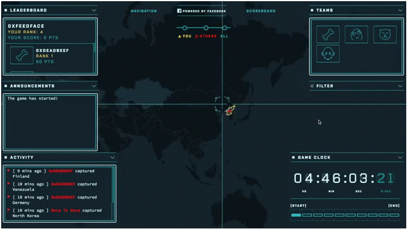
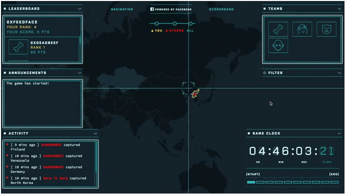
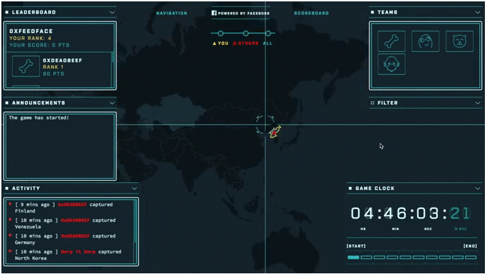

❮
❯


The attack-defend CTF is where each team attacks the other team's system, as well as defend their own system. Usually, there are two rounds of game play in which one team is the attacking team and the other team is the defending team in the first round and then they switch for the second round. There are flags (text files, folders, images, etc.) in the defending machines that the attacking team attempts to find as they compromise the machines. The attacking team is able to use different hacking tools in order to compromise the defending machines but there are rules in place to ensure that the teams are not at an advantage over the other. The defending team can do anything within the rules to defend their machines against the attacking team. They are not allowed to disable any network connections or turn off the machines. If there is any rule violation, the team will incur a penalty or be disqualified.
The Jeopardy-style CTF is similar to the actual Jeopardy game as the scoreboard looks like a Jeopardy board with different categories and point values. There can be more than two teams as the teams are not trying to attack each other. Some of the categories can include Cryptography, Steganography, Physical Security and Scanning. There are several other categories that can be used. Some of the challenges can be done against a main server that was developed for the CTF and the flag is inputted into the CTF scoreboard to get points for the team. A timer is used to start and stop the CTF and once the timer finishes, the game is over. The team with the most points at the end wins.